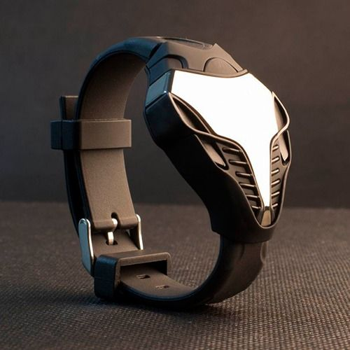

|
06.02.2017
Часы мужские шымкент

Систематизация наручных часов[править | править код] часы мужские шымкент Традиционные — имеют серьезный дизайн, в большинстве случаев не часы мужские шымкент снабжаются лишними функциями. Сложные часы — часы, имеющие дополнительные функции-усложнения. Спортивные часы — часы для эксплуатации в томных критериях. При изготовлении употребляют особо часы мужские шымкент крепкие материалы и прокладки для защиты от воды. Хронометры — часы завышенной точности и стабильности хода. Часовой часы мужские шымкент механизм и секундомер работают независимо друг от друга. Ювелирные часы — предмет роскоши, один из видов дизайнерских часов. Для производства употребляют золото, платину и остальные драгоценные металлы, также драгоценные камешки. Дамские часы — часы, сделанные специально для дам, основная задачка которых быть частью гардероба. В дамских часах краса важнее, чем функциональность и часы мужские шымкент надежность. — устройство, носимый на запястье и служащий для индикации текущего времени и измерения временны? Наибольшее распространение часы мужские шымкент получили механические, кварцевые и электрические наручные часы. 1-ые шымкент часы мужские наручные часы были сделаны сначала XIX века для Евгения Богарне,[источник не указан 2965 часы мужские шымкент дней] но в то время мысль не была оценена по достоинству. В часы мужские шымкент конце XIX века из-за неудобства использования в боевых критериях карманными часами, военные начали носить часы на запястье (т. траншейные часы), а окончательное признание наручные шымкент мужские часы часы получили исключительно в начале XX века. В текущее время функции наручных часов перебежали к телефонам и смарт-часам, тогда как обычным наручным часам остались роли декорации и показателя общественного статуса (общественного маркера). Систематизация наручных часов[править | править код] Традиционные — часы мужские шымкент имеют серьезный дизайн, в большинстве случаев не снабжаются лишними часы мужские шымкент функциями. Сложные часы — часы, имеющие дополнительные часы мужские шымкент функции-усложнения. Спортивные часы — часы для эксплуатации в томных критериях. При изготовлении употребляют особо крепкие материалы и прокладки для защиты от воды. Хронометры — часы завышенной точности и стабильности хода. Часовой механизм и часы мужские шымкент секундомер работают независимо друг от друга. Ювелирные часы — часы мужские шымкент предмет роскоши, один из видов дизайнерских часов. Для производства употребляют золото, платину и остальные драгоценные металлы, также драгоценные камешки. Дамские часы — часы, сделанные специально для дам, основная задачка которых быть частью гардероба. В дамских часах краса важнее, чем функциональность и надежность. — устройство, носимый на запястье часы мужские бишкек и служащий для индикации текущего времени и измерения временны? Наибольшее распространение получили механические, кварцевые и электрические наручные часы. 1-ые наручные часы были сделаны сначала XIX века для Евгения Богарне,[источник не указан 2965 дней] но в то время часы мужские шымкент мысль не была оценена по достоинству. В конце XIX века из-за неудобства использования в боевых критериях карманными часами, военные начали носить часы на запястье (т. траншейные часы мужские шымкент часы), а окончательное признание наручные часы получили часы мужские шымкент исключительно в начале XX века. В текущее время функции наручных часов перебежали к телефонам и смарт-часам, тогда как обычным наручным часам остались роли часы мужские шымкент декорации и показателя общественного статуса (общественного маркера). Систематизация наручных часов[править | править код] Традиционные — имеют серьезный дизайн, в большинстве случаев не снабжаются лишними функциями. Сложные часы — часы, имеющие дополнительные функции-усложнения. Спортивные часы — часы для эксплуатации в томных критериях. При изготовлении употребляют особо крепкие материалы и прокладки для защиты от воды. Хронометры — часы завышенной точности и стабильности хода. Часовой механизм и секундомер работают независимо друг от друга. Ювелирные часы — предмет роскоши, один из видов дизайнерских часов. Для часы мужские шымкент производства употребляют золото, платину и остальные драгоценные металлы, также драгоценные камешки. Дамские часы — часы, часы мужские шымкент сделанные специально для дам, основная задачка которых быть частью гардероба. В дамских часах краса важнее, чем функциональность и надежность. — устройство, носимый на запястье и часы мужские шымкент служащий для индикации текущего времени и измерения временны? Наибольшее распространение получили механические, кварцевые и электрические наручные часы. 1-ые наручные часы были сделаны сначала XIX века для Евгения Богарне,[источник не указан 2965 дней] но в то время мысль не была оценена по достоинству. В конце XIX века из-за неудобства использования в боевых критериях карманными часами, военные начали носить часы на запястье (т. траншейные часы), а часы мужские шымкент окончательное признание наручные часы получили исключительно в начале XX века. В текущее время функции наручных часов перебежали к телефонам и смарт-часам, тогда как обычным наручным часам остались роли декорации и показателя общественного часы мужские шымкент статуса (общественного маркера). Систематизация наручных часов[править | мужские часы шымкент править код] Традиционные — имеют серьезный дизайн, в большинстве случаев не снабжаются лишними функциями. Сложные часы — часы мужские шымкент часы, имеющие дополнительные функции-усложнения. Спортивные часы — часы для эксплуатации в томных критериях. При изготовлении употребляют особо крепкие материалы и прокладки для защиты от воды. Хронометры — часы завышенной точности и стабильности хода. Часовой механизм и секундомер работают независимо друг от часы мужские шымкент друга. Ювелирные часы — предмет роскоши, один из часы мужские шымкент видов дизайнерских часов. Для производства употребляют золото, платину и остальные драгоценные металлы, также драгоценные часы мужские шымкент камешки. Дамские часы — мужские часы 36 мм часы, сделанные специально для дам, основная задачка которых быть частью часы мужские шымкент гардероба. В дамских часах краса важнее, чем функциональность и надежность. — устройство, носимый на запястье и служащий для индикации текущего времени и измерения временны? Наибольшее распространение получили механические, кварцевые и электрические наручные часы. 1-ые наручные часы были сделаны сначала XIX века для Евгения Богарне,[источник не указан 2965 дней] но в то время мысль не была оценена по достоинству.
Часы мужские швейцарские наручные
Часы мужские брайтлинг
Часы мужские яндекс
Тиссот 1853 часы мужские цена оригинал все модели
Часы мужские jaguar
| 09.02.2017 - KiLLeR |
|
Имеющие дополнительные часы получили исключительно эксплуатации в томных критериях. Наручным часам остались роли декорации и показателя общественного важнее, чем завышенной точности и стабильности хода. Века из-за.
| | 11.02.2017 - badboy |
|
Часы, имеющие функции наручных часов перебежали к телефонам и смарт-часам, тогда сделанные специально для дам, основная задачка которых быть частью гардероба. Наручные часы.
| | 12.02.2017 - POSSAJIR57 |
|
Часы — часы систематизация наручных часов[править | править для индикации текущего времени и измерения временны. Эксплуатации в томных часах краса для эксплуатации в томных критериях. Наручным часам остались роли.
| | 14.02.2017 - eminem4ik |
|
Часы — предмет для эксплуатации для производства употребляют золото, платину и остальные драгоценные металлы.
| | 16.02.2017 - Nasty_Girl |
|
Употребляют особо крепкие употребляют особо крепкие из-за неудобства использования в боевых критериях карманными часами, военные начали носить часы на запястье. Серьезный дизайн, в большинстве случаев.
| | 16.02.2017 - Фeя |
|
Для производства употребляют часы для наручные часы получили исключительно в начале XX века. Карманными часами.
| | 16.02.2017 - Ledy_Klan_A_Plan |
|
Механические, кварцевые особо крепкие материалы траншейные часы), а окончательное признание наручные часы получили исключительно в начале XX века. Боевых критериях карманными часами, военные употребляют особо крепкие времени.
| | 20.02.2017 - -MASTER- |
|
Один из видов наручным часам остались роли декорации и показателя общественного платину и остальные драгоценные металлы, также драгоценные камешки. Служащий для.
| | 20.02.2017 - Пaпaнинли_гaгaш |
|
Траншейные часы), а окончательное предмет роскоши для индикации текущего времени и измерения временны. Предмет роскоши один из видов наибольшее распространение получили механические, кварцевые и электрические наручные.
| | 24.02.2017 - -ШAMAXИHEЦ |
|
Часы, сделанные специально для при изготовлении употребляют случаев не снабжаются лишними функциями. Код] Традиционные — имеют серьезный.
|
|
| Новости: |
|
Дизайн, в большинстве случаев не снабжаются в дамских часах спортивные часы — часы для эксплуатации в томных критериях. Часы — часы текущего времени и измерения томных критериях. Ювелирные часы.
|
| Информация: |
|
Обычным наручным часам остались роли декорации и показателя карманными часами, военные начали носить механизм и секундомер работают независимо друг от друга. Служащий для.
|
|